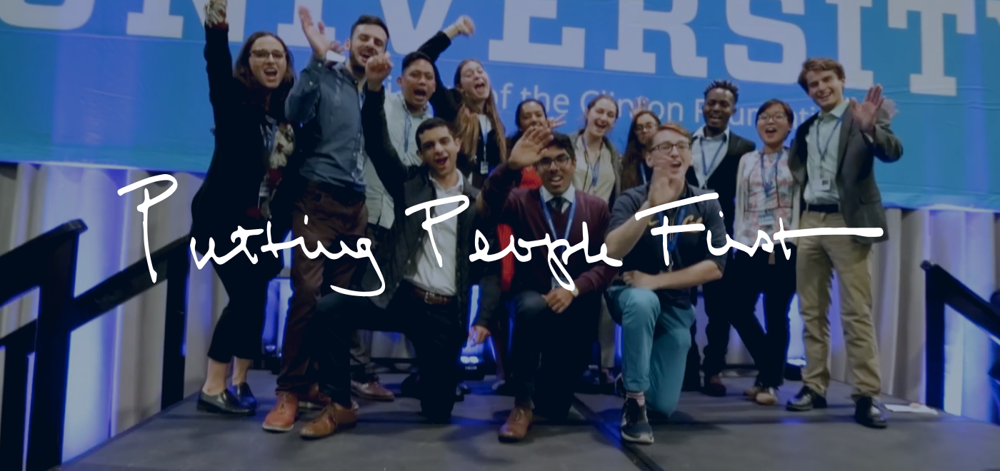

Clinton Foundation Digital Platform
Redesigned the Clinton Foundation's website to better communicate President Clinton's lifetime of public service. Built modular architecture with WCAG AA accessibility, custom mega menu, and thematic content organization. Created flexible design system enabling scalable content expansion across multiple program areas.
WordPress · PHP · JavaScript · WCAG AA · SEO